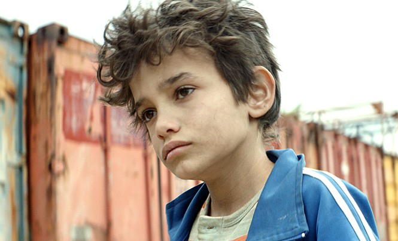

<가버나움> 속 모든 인물은 전문 연기자가 아닌, 해당 역할과 비슷한 환경, 경험을 가진 실제 인물들로 캐스팅됐다. 자인 역의 자인 알 라피아는 시장에서 배달 일을 하던 시리아 난민 소년으로, 베이루트 지역에서 <가버나움> 캐스팅 디렉터의 눈에 띄어 영화에 첫 출연하게 되었다.
라힐 역의 요르다노스 시프로우는 실제 불법 체류자로 <가버나움>의 캐스팅 디렉터를 만나 자신의 이야기를 영화를 통해 보여주고 또, 보호자 없는 아이들을 돕고 싶다는 뜻을 전하며 캐스팅되었다. 한 살배기 요나스 역의 보루와티프 트레져 반콜 또한 레바논에서 인종차별 등 여러 고충을 겪으며 가족과 체류 중이었는데 베이루트에서 캐스팅 디렉터에 의해 캐스팅되었다. 자인의 여동생 사하르 역의 하이타 아이잠은 베이루트 거리에서 껌을 팔고 있는 모습을 본 캐스팅 디렉터에 의해 캐스팅되었다.
RECORD <가버나움>은 제71회 칸영화제에서 최장 15분간의 기록적 기립박수가 터진 영화이다. <어느 가족>과 <버닝> 등이 황금종려상의 유력 후보로 거론되던 중 <가버나움>의 등장으로 삼파전의 양상을 띄며 칸영화제를 뜨겁게 달궜다. <가버나움>은 칸영화제 공식 상영에서 영화가 끝난 후 최장 15분간의 기록적 기립박수가 터져 나왔고, 황금종려상 발표 전까지 팽팽한 긴장감을 유지시키며 제71회 칸영화제에서 심사위원상 수상의 영광을 안았다. THE FIRST <가버나움>은 레바논 최초로 골든글로브 외국어 영화상 후보에 오른 작품이다. 또한 나딘 라바키 감독은 아카데미 외국어 영화상 1차 후보에 아랍 여성 감독으로는 최초로 이름을 올렸다. <가버나움>은 제91회 아카데미 외국어 영화상 최종 후보작으로 유력하게 손꼽히고 있어 새로운 기록은 앞으로도 계속될 전망이다.